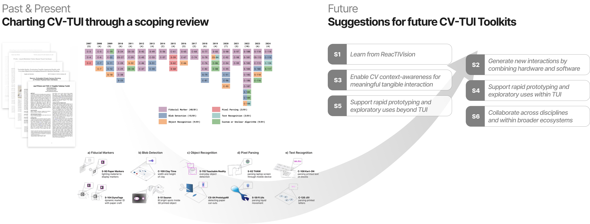
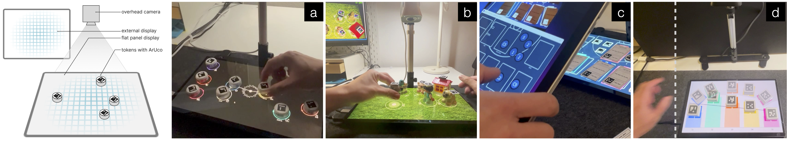

Outdated Computer Vision (CV) toolkits for Tangible User Interfaces (TUI) have led to fragmented practices, diminished reproducibility, and reduced community support. This paper examines the past, present, and future trajectory of CV-TUI toolkits. Our scoping review of ACM literature (N=120) reveals a divergence between applications using the limited interactions of established toolkits like ReacTIVision and the fragmented, bespoke systems built for complex interactions, highlighting the need for advanced toolkits that enable accessible making. We found how ReacTIVision-based projects were primarily used in stationary tabletop settings with standard token events, while non-ReacTIVision projects explored unique interaction techniques in diverse configurations. Reflect ing on these insights, we offer six suggestions for building the next-generation CV-TUI toolkits to support rapid prototyping of tangible interactions. This study provides the TUI community with an updated perspective to inform future research.

Tangible User Interfaces (TUIs) that integrate digital information with physical interaction require specialized hardware and complex calibration, limiting their adoption in portable or mobile display systems. This paper introduces ArUcoTUI, a computer vision (CV) toolkit for prototyping tangible interactions on portable screens, leveraging standard cameras and the OpenCV library. ArUcoTUI uses ArUco fiducial markers to detect physical inputs. The software toolkit offers streamlined calibration, a signal processing pipeline, and a client application that translates tangible input into structured events for use in HCI applications. Using a conventional camera in a top-down setting with a flat-panel display, we demonstrate how this toolkit supports the development of interactive surface TUIs with advanced features, including 3D spatial interaction, multi-device interaction, and actuated tangibles within applications. We describe the software implementation, which utilizes accessible hardware to support the development of these tangible interactions. We provide the results of a preliminary evaluation with users, including design implications and suggestions for future research and development.